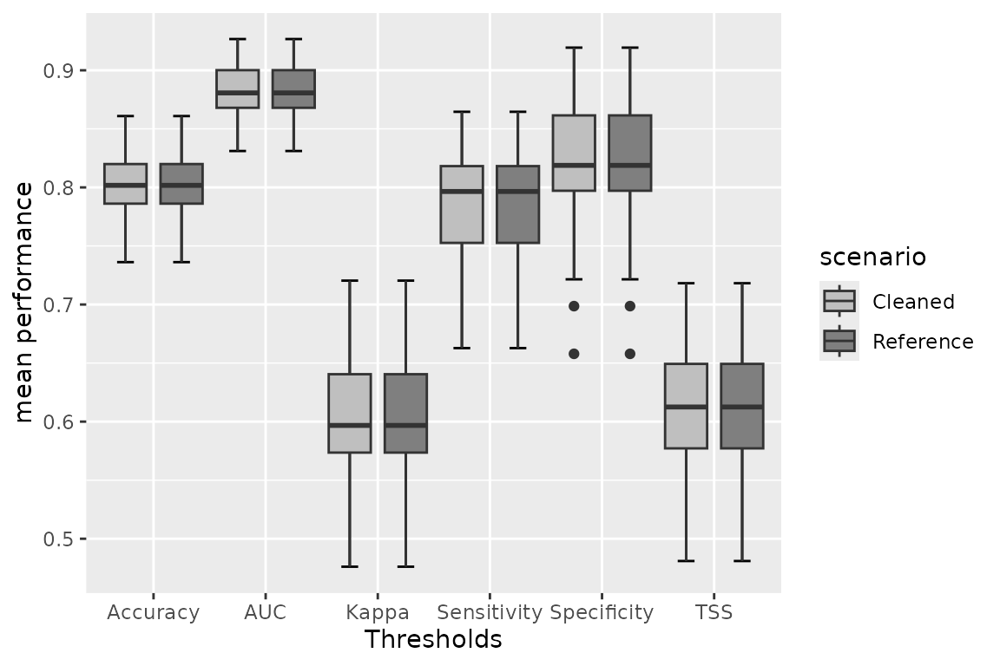
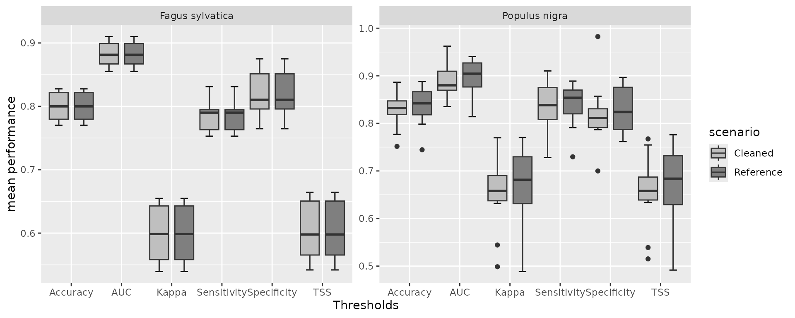

Detecting environmental outliers in species distribution models for plants.
Source:vignettes/Plants.Rmd
Plants.RmdDetect environmental outliers for species occurrences in Fagus sylvatica, and Populus nigra* records based on bioclimatic data*.
To test the workflow on two plant species, namely the black poplar (Populus nigra) , which is a pioneer wind-pollinated deciduous tree from the Salicaceae family (de Rigo et al., 2016). The tree is distributed across Europe, Asia, and northern Africa (de Rigo et al., 2016; Harvey-Brown et al., 2017) and predominantly in flood plains in mixed forests (Harvey-Brown et al., 2017). The mature tree lives up to 300 to 400 years (de Rigo et al., 2016), and it has been assessed as data deficient according to IUCN RedList (Harvey-Brown et al., 2017). Secondly, we considered the European beech or common beech (Fagus sylvatica), which is also a deciduous hardy tree species that can tolerate various soil habitats but is not tolerant of waterlogged areas (Barstow et al., 2018). Although mature individuals have declined, the tree species IUCN RedList threat status is assessed as Least Concern (Barstow et al., 2018).
- Data acquisition: a) species records
Data was retrieved from the iNaturalist (https://www.inaturalist.org/) and Global Biodiversity
Information Facility-GBIF (https://www.gbif.org/). We use the
getdata() function, built around rvertnet,
rgbif, and rinat packages. We limited the occurrence records from GBIF
to 700 and Inaturalist to 100. To extract data from the
dataonline class returned by
getdata(), we used the
extract_online() function. *
Note: If the user has locally saved data, then after
extracting the online data, the
match_datasets() function can be used to
merge all the data sets.
- We set the bounding box
(bbox)parameter forgetdata()to return only records within the Danube basin. However, the user can set this to suit the area of concern. If not set, the user data will download records globally, which is time-consuming and likely to break during the download. Therefore, it is strongly advisable to set thebounding box. Also, if a shapefile is available, the user can provide it instead of the bounding box, and the function will automatically extract the bounding box. -
isFishis necessary to indicate whether it’s a fish species since function cross-checks fish taxa names in FishBase for synonyms, name spelling, and other taxa names using thetaxizepackage. Therefore, no fish taxa will return errors.
plantdf <- getdata(data = c( "Populus nigra", "Fagus sylvatica"),
gbiflim = 700, inatlim = 100, isFish = FALSE,
hasCoordinate = TRUE,
bbox = c(xmin = 8.15250, ymin = 42.08333, xmax=29.73583, ymax = 50.24500),
verbose = FALSE, warn = FALSE)
extrdata <- extract_online(plantdf)- Data acquisition: b) Environmental predictors
We used WORLDCLIM data archived in the package to enable users to
test the package functions seamlessly. For direct interaction with the
WORDCLIM data, please visit (https://www.worldclim.org/) and the
geodata package for download in
user-customized workflows. WORLDCLIM data has 19 bioclimatic variables
(https://www.worldclim.org/data/bioclim.html) (Amatulli
et al., 2022), including
-
BIO1= Annual Mean Temperature -
BIO2= Mean Diurnal Range (Mean of monthly (max temp - min temp)) -
BIO3= Isothermality (BIO2/BIO7) (×100) -
BIO4= Temperature Seasonality (standard deviation ×100) -
BIO5= Max Temperature of Warmest Month -
BIO6= Min Temperature of Coldest Month -
BIO7= Temperature Annual Range (BIO5-BIO6) -
BIO8= Mean Temperature of Wettest Quarter -
BIO9= Mean Temperature of Driest Quarter -
BIO10= Mean Temperature of Warmest Quarter -
BIO11= Mean Temperature of Coldest Quarter -
BIO12= Annual Precipitation -
BIO13= Precipitation of Wettest Month -
BIO14= Precipitation of Driest Month -
BIO15= Precipitation Seasonality (Coefficient of Variation) -
BIO16= Precipitation of Wettest Quarter -
BIO17= Precipitation of Driest Quarter -
BIO18= Precipitation of Warmest Quarter -
BIO19= Precipitation of Coldest Quarter
#Get climatic variables from the package folder
worldclim <- system.file('extdata/worldclim.tiff', package = 'specleanr')
worldclim <- terra::rast(worldclim)- Preliminary analysis
The step involves removing missing coordinate values, setting the geographical range for the data collated in 1.a, if the user did not set the bounding box during data download. After that, the environmental data predictors are extracted. The user can set either parameter list = TRUE to return a list of datasets for each species, if multiple species are considered, or list = FALSE to return a combined dataframe. The Danube basin was collated from the Hydrography90m basin files (https://hydrography.org/hydrography90m/hydrography90m_layers).
danube <- system.file('extdata/danube/basinfinal.shp', package = 'specleanr')
danube_basin <- sf::st_read(danube, quiet=TRUE)
#Environmental predictors extraction for multiple species (multiple = TRUE)
plantcleaned <- pred_extract(data= extrdata,
raster= worldclim,
lat = 'decimalLatitude',
lon = 'decimalLongitude',
colsp = 'species',
multiple = TRUE,
bbox = danube_basin,
list= TRUE,
minpts = 10, merge = FALSE, verbose = FALSE, warn = FALSE)
#Environmental prediction extraction for a single species (multiple = FALSE)
sp1df <- subset(extrdata, species=="Fagus sylvatica")
p1cleaned <- pred_extract(data= sp1df,
raster= worldclim,
lat = 'decimalLatitude',
lon = 'decimalLongitude',
colsp = 'species',
multiple = FALSE,
bbox = danube_basin,
list= TRUE,
minpts = 10, merge = FALSE, verbose = FALSE, warn = FALSE)- Detecting outliers using multiple outlier detection methods
- To detect outliers we selected ensembled seven outlier detection
methods at least from different categories i.e., 1) univariate
methods: adjusted boxplot
adjbox(), Hampel filter:hampel(), Z-scorezscore()and reverse jackknifingjknife(); 2) Multivariate methods or machine learning models: local outlier factor:lof(), K-means:kmeans(), and Mahalanobis distance measuremahal().
#Flag outlier in single species data (multiple = TRUE)
outliersdata <- multidetect(data = plantcleaned,
multiple = TRUE,
var = 'bio1',
output = 'outlier',
exclude = c('x','y'),
methods = c('adjbox', "hampel", 'zscore',
'lof', 'jknife', 'kmeans', 'mahal'),
showErrors = TRUE, warn = F, verbose = F)
#> [1] "bio1"
#> [1] "bio1"
#Flag outlier in single species data (multiple = FALSE)
out1df <- multidetect(data = p1cleaned,
multiple = FALSE,
var = 'bio1',
output = 'outlier',
exclude = c('x','y'),
methods = c('adjbox', "hampel", 'zscore',
'lof', 'jknife', 'kmeans', 'mahal'),
showErrors = TRUE, warn = F, verbose = F)Visualizing outliers flagged by each method
The plots are wrapped on a ggplot2 object and extensible with ggplot2
parameters. The ggoultiers() takes in 3
parameters: 1: x the outlier object of
datacleaner class; 2: y
the index or species name if the outlier has more than one species, and
3: raw to either indicate the number of outlier if
TRUE or proportional or outliers flagged about total
number of occurrences if FALSE
ggoutliers(x=outliersdata, y= 1, raw=FALSE)
#for one species: no index needed
ggoutliers(x= out1df) Identify the best threshold using loess model.
Identify the best threshold using loess model.
optimal1<- optimal_threshold(refdata = p1cleaned, outliers = out1df, plot = TRUE)
optimalthreshold <- optimal_threshold(refdata = plantcleaned, outliers = outliersdata, plot = FALSE)*Indicate the best methods obtained for each species
mbest <- multibestmethod(x = outliersdata, autothreshold = TRUE)- Extracting clean data set after outlier detection
The mode can be set to mode = abs to discard only absolute outliers or mode = best to use the best method. The outlier flagged by the best method will be used to clean the data. For more information, check (B….2024).
cleandf <- clean_data_extract(refdata = plantcleaned, outliers = outliersdata,
mode = "best", threshold = 0.4, warn = FALSE, verbose = TRUE, pabs = 0.1)
#> Criteria: Best method selected with majority votes of 3.
#> Criteria: Best method selected with majority votes of 4.
cleandf1 <- clean_data_extract(refdata = p1cleaned, outliers = out1df,
mode = "best", threshold = 0.4, warn = FALSE, verbose = TRUE, pabs = 0.1)
#> Criteria: Best method selected with majority votes of 4.- Model comparison
We vary the different thresholds, which determine the number of outlier detection used to indicate that a record is an outlier. For example, a record flagged as an outlier at a threshold of 1 means that all the methods ensembled identified the record as an outlier. Therefore, based on that principle, we vary the threshold from 0.8 and predict and develop models at each step. Then, we evaluate the model performance using threshold-dependent and independent evaluation metrics such as TSS, accuracy, Kappa, Sensitivity, and Area Under the Curve (AUC).
multsppmodel <- modelcomparison(refdata = plantcleaned, outliers = outliersdata, raster = worldclim,
lat = 'y', lon = 'x', models = c("GLM"), mode = 'abs',
thresholds = 0.8)
onesppmodel <- modelcomparison(refdata = p1cleaned, outliers = out1df, raster = worldclim,
lat = 'y', lon = 'x', models = c("GLM"), mode = 'abs',
thresholds = 0.8, nboots = 50)Extract model performance
- cutoff of 0.5, is to limit which threshold results the user whats to plot.
#for one species
onespp <- get_performance(modelcomp = onesppmodel)
#for multiple species
multspp <- get_performance(modelcomp = multsppmodel)Plotting to visualize comparisons
#one species
ggperform(modelout = onesppmodel, eval = c("auc", "Accuracy", "Sensitivity",
"Kappa", "Specificity", "TSS"))
ggperform(modelout = multsppmodel, eval = c("auc", "Accuracy", "Sensitivity",
"Kappa", "Specificity", "TSS"))
References
Amatulli, Giuseppe, et al. “Hydrography90m: A new high-resolution global hydrographic dataset.” Earth System Science Data 14.10 (2022): 4525-4550.
Harvey-Brown, Y., Barstow, M., Mark, J. & Rivers, M.C. 2017. Populus nigra. The IUCN Red List of Threatened Species 2017: e.T63530A68106816. https://dx.doi.org/10.2305/IUCN.UK.2017-3.RLTS.T63530A68106816.en. Accessed on 24 June 2024.
de Rigo, D., Enescu, C.M., Houston Durrant, T. and Caudullo, G. 2016. Populus nigra in Europe: distribution, habitat, usage and threats. European Atlas of Forest Tree Species, Publications Office of the European Union, Luxembourg.
Barstow, M. & Beech, E. 2018. Fagus sylvatica. The IUCN Red List of Threatened Species 2018: e.T62004722A62004725. https://dx.doi.org/10.2305/IUCN.UK.2018-1.RLTS.T62004722A62004725.en. Accessed on 24 June 2024.